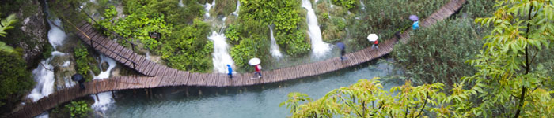
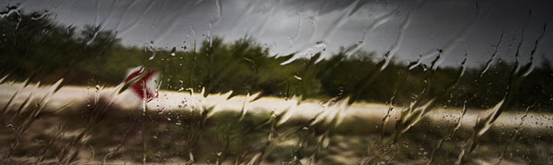
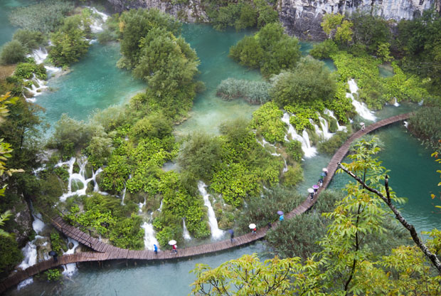
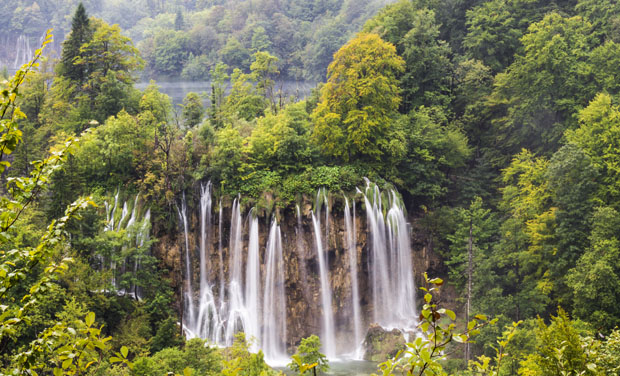
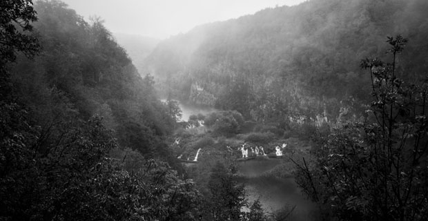

Experiences
If you're looking for more personal opinions and tips about the park then this is the place to look. Here we have shared our experiences and our thoughts from our trip.
• • •
How many days?
One important question that pops up when you're planning a trip is how long time you should stay at different places. So how many days do we recommend you to spend in this beautiful park?
The answer depends on several factors. We are all different, but the weather can make a difference on us all. If you get lucky with the weather then you will probably walk a few hours more than if it was raining.
Photo by: Fredrik Beiron
We didn't get much luck when we visited. The first day we got wet and cold after a few hours of rain and wind. Therefore we decided to go back to our room. The next day the sun came out after a while and our mood got better. We enjoyed the park more without the rain and it led to a few more hours in the park than we thought.
You can easily walk through the park in one day with a decent weather. But if you want some time to admire the park, take photographs, avoid stress and so on we would recommend a two-day visit. And if you do get bad weather it's good to get a new chance the next day.
Best places in the park
Veliki Slap is the biggest waterfall with a height of 70 meters and it's surroundings are a must see if you visit the park. It's located at the Lower lakes very close to entrance number one.
It rained very much when we were there and the great amount of water in the waterfalls caused a mist that made it impossible to photograph at close. That's why there are no pictures of it in the gallery. But we have some footage of it in our short movie. Because of the bad weather we didn't walk around it, but we do regret that we didn't went back there the next day. Make sure to walk around this area and find a viewpoint because this is the place with the most spectacular waterfalls.
The Lower lakes are definitely one of the best parts of the park. Steep mountain slopes create a canyon in this area. You can walk through a cave with several stairs made of stone that will take you up on the canyons east side. There you will have a great view down on the lakes from above. Then you can continue and walk on the mountainside until you get to Entrance one. We recommend that you walk along the lake in one direction and up on the canyon on the way back.
Photo by: Fredrik Beiron
The Upper lakes are also worth seeing. Especially the lower part very close to Entrance 2. A short boat trip over to the other side from the entrance takes you to a magnificent area with lots of small waterfalls close to the walking path.
A big waterfall can also be seen in the middle of the Upper lakes. We walked up on a mountain next to this waterfall and found a great viewpoint that resulted in the photo below. We can strongly recommend that you explore the possibilities to walk up on the mountains that surround the lakes. Then you can see the park from a different perspective.
Photo by: Fredrik Beiron
Tips
Kozjak lake in the middle isn't that interesting. We recommend that you skip this part and take the electric boat or the shuttle bus between the Upper lakes and the lower lakes instead of walking. This will save you some time that you can spend on more exciting parts.
The transportation system is well planned, use it and save time! For example it is possible to walk between two stations and take the shuttle bus back to where you came from. Different walking routes with approximate duration time you will find here.
And don't forget the camera! Amazing nature and landscape photos are guaranteed. An extra battery may also be a good thing to bring. If you do get bad weather, then you can always be happy for the good lighting conditions from a photographers point of view instead. Many of our best photos were photographed in rain!
Photo by: Fredrik Beiron
• • •
Not convinced that you want to visit the park? Just watch our movie or gallery and it will surely sway you!